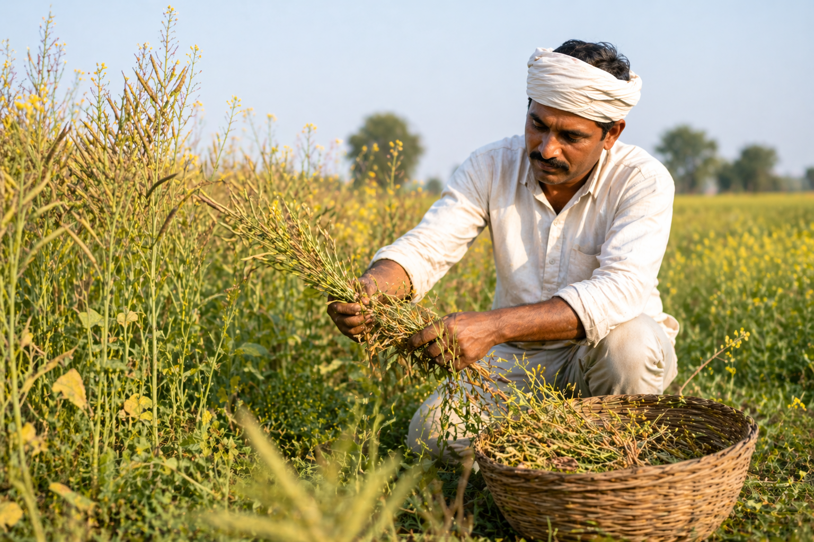
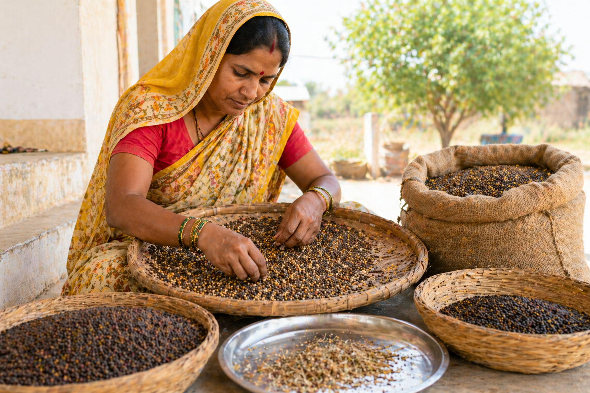
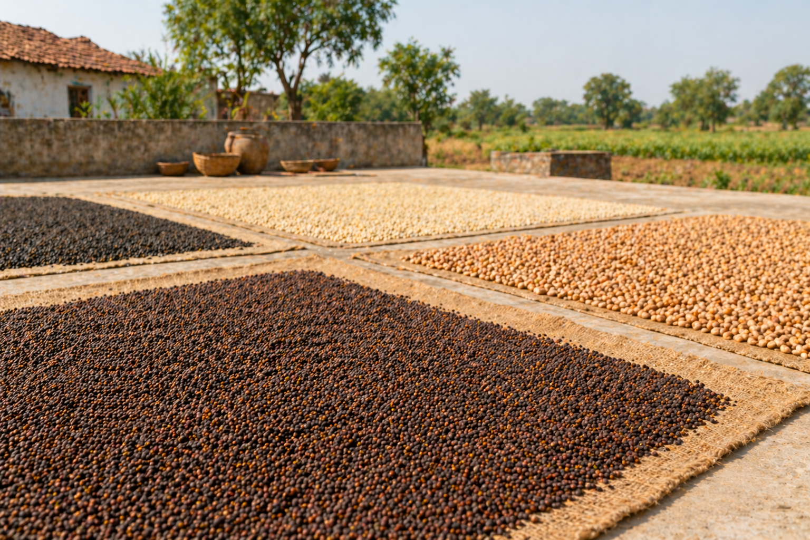
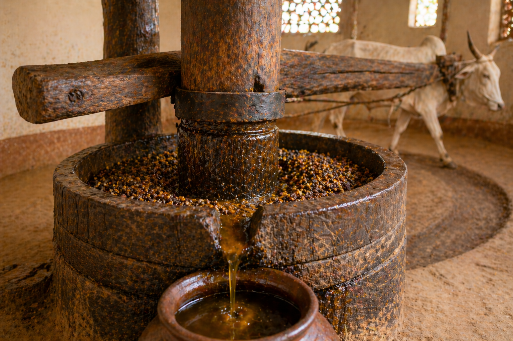
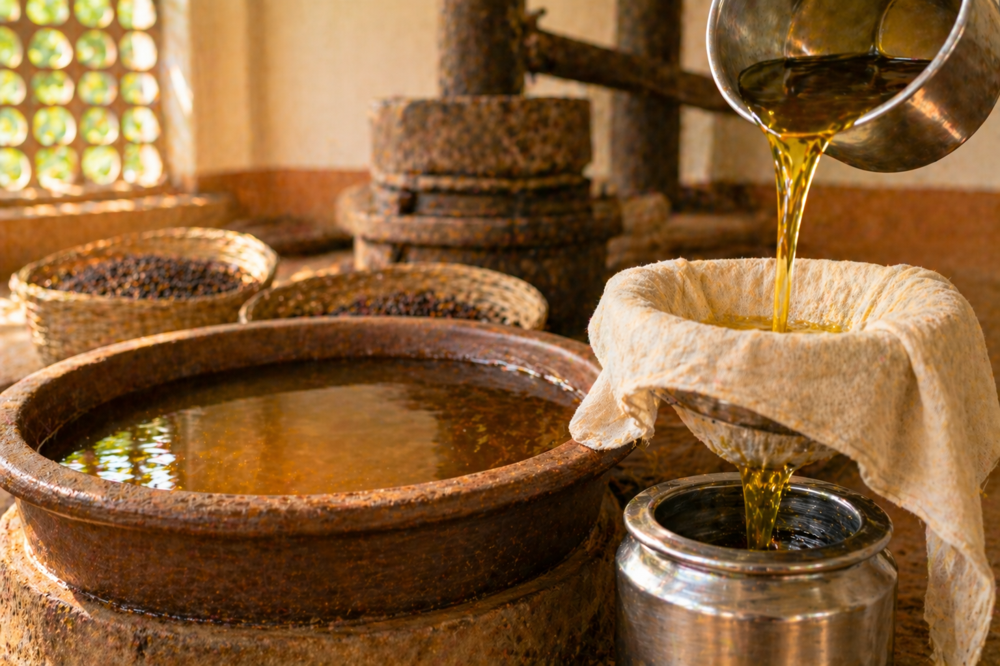
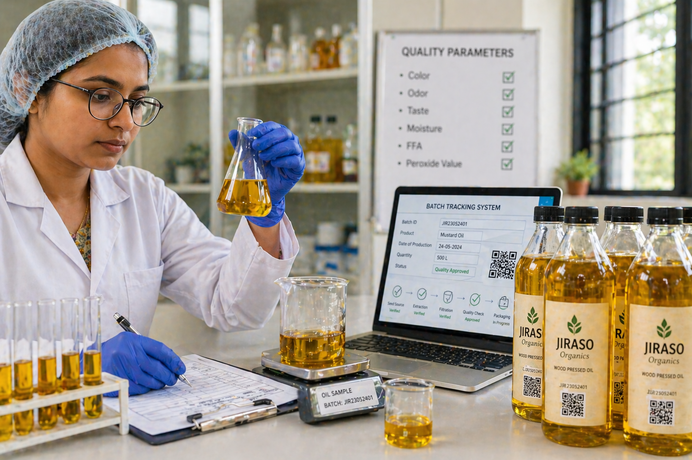
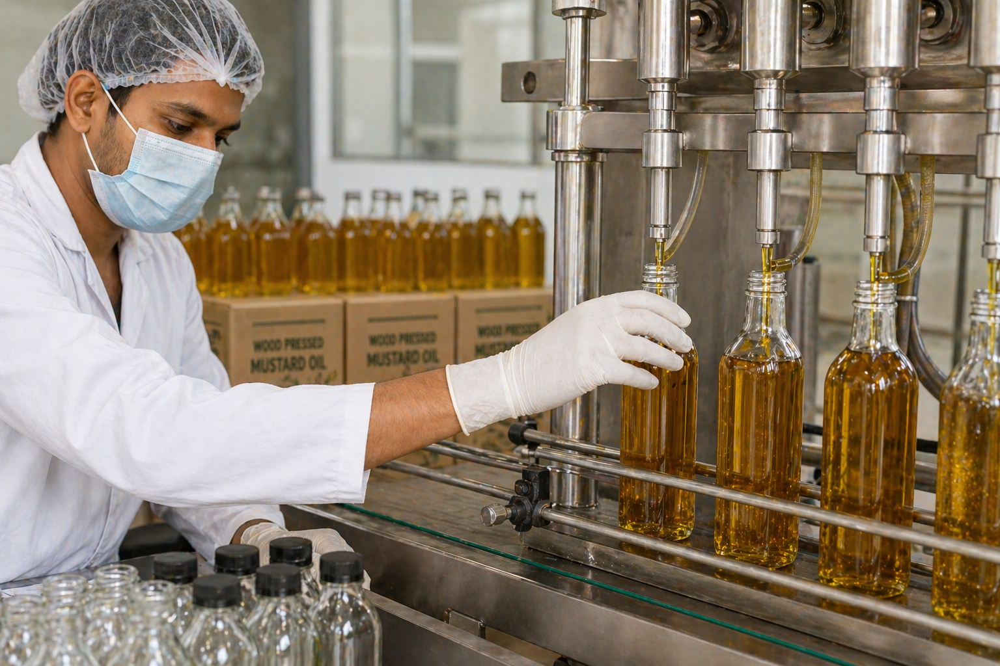
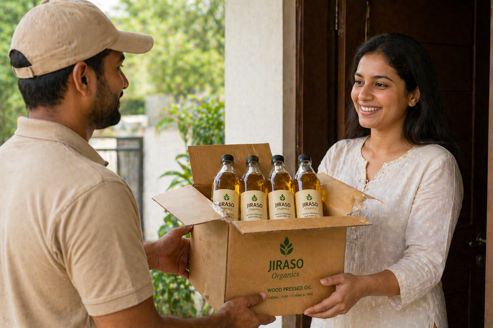

Step 01
Responsible Seed Sourcing
We begin with farm-direct procurement, selecting mature mustard, sesame, coconut, and groundnut seeds from trusted growers so purity starts at the source.
01

Our Process
Traditional low-heat extraction with modern quality controls — a 10-step journey that preserves nature's goodness.
Step 01
We begin with farm-direct procurement, selecting mature mustard, sesame, coconut, and groundnut seeds from trusted growers so purity starts at the source.

Step 02
Raw seeds are cleaned to remove dust, stones, and foreign matter, then graded for uniform size to maintain pressing consistency and flavor quality.
Step 03
Before pressing, seeds are conditioned to balanced moisture levels, helping us keep extraction stable and avoid nutrient damage from excess heat.


Step 04
The wooden ghani setup is calibrated for low-RPM pressing, preserving natural aroma while avoiding aggressive industrial extraction methods.
Step 05
Seeds are pressed slowly in wooden churners so oil is extracted gently, helping retain native micronutrients, body, and authentic taste.


Step 06
Freshly extracted oil is rested in stainless vessels, allowing natural sediment to settle without harsh chemical refining.
Step 07
We use careful filtration to remove remaining particles while preserving oil character, clarity, and the signature aroma of each seed variety.


Step 08
Each batch is reviewed for physical and quality parameters so every bottle reflects consistent purity and process integrity.
Step 09
The final oil is filled into food-grade bottles under controlled hygiene standards, then sealed to lock freshness.


Step 10
From batch coding to dispatch, every bottle is traceable and ready to deliver authentic wood-pressed goodness to modern homes.
Ready to taste the difference?
Order your first bottle today